HELP: Bash Config
Bash Config allows the user to make changes to the aliases and terminal prompt theming in the user's bashrc file.
NOTE: changes only affect the drop-down terminal (by default F4) after exiting it by clicking the little "x" box in the lower right-hand corner to close the tab, or by typing "exit" at the terminal prompt.
Alias
Allows the user to make changes, additions, and removals of aliases contain in the user's bashrc file. The aliases will go into effect on the next terminal launch. Click the respective button to add or remove aliases.
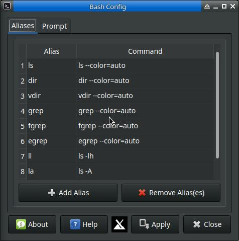
Prompt
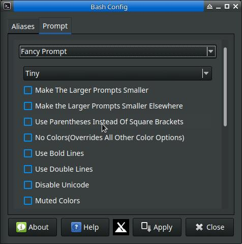
On this tab the user may make various adjustments to their terminal prompt by selecting the "Fancy Prompts" option. The options dialog will then appear. There are many options. In particular, The date and time customizations may be confusing. I list of time and dates codes is below. See the "date" man pages for more information (man date)
The user may revert back to whatever prompt was previously the default prompt by selecting "Default"
Tips and Tricks
- All changes are stored in external files. Changes may be reverted totally be removing those files.
- Prompt changes are in ~/.config/bash-config folder.
- alias changes are in ~/.bash_aliases
- If you would like a 1 line prompt, choose fancy and either std or color. You can add extra lines to a prompt in the prompt field with an escaped \n (in other works, \\n)
- Spaces are accepted in the customization fields, if you want a little padding between the custom prompt and the start of command text in the terminal.
Prompts
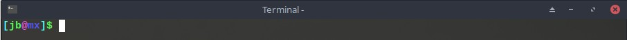
Color
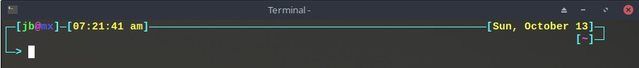
Curl
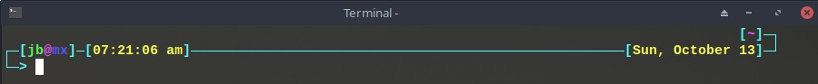
Date
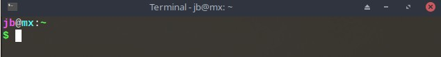
Default
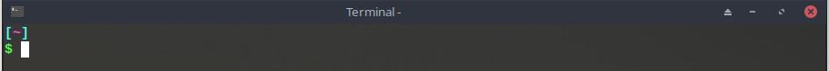
Dir
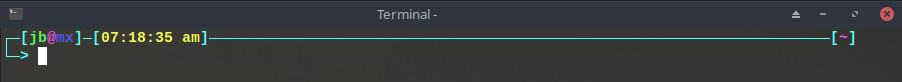
Fancy
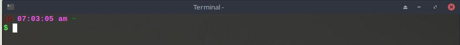
Gentoo
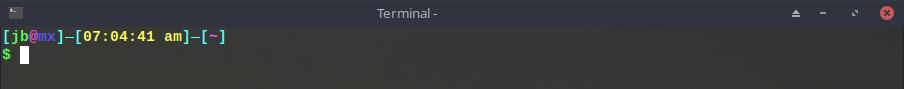
Med
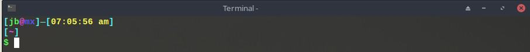
Narrow
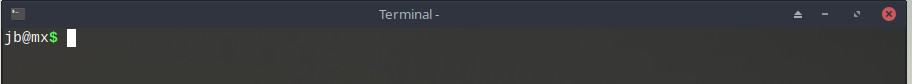
Std
Tiny
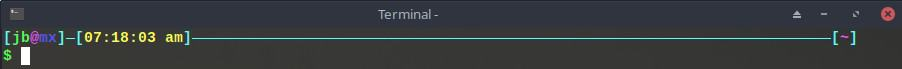
Wide
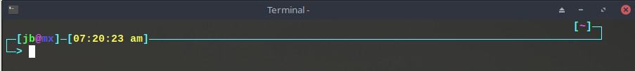
Zee
Date & Time format codes. Interpreted sequences are:
- %% a literal %
- %a locale's abbreviated weekday name (e.g., Sun)
- %A locale's full weekday name (e.g., Sunday)
- %b locale's abbreviated month name (e.g., Jan)
- %B locale's full month name (e.g., January)
- %c locale's date and time (e.g., Thu Mar 3 23:05:25 2005)
- %C century; like %Y, except omit last two digits (e.g., 20)
- %d day of month (e.g., 01)
- %D date; same as %m/%d/%y
- %e day of month, space padded; same as %_d
- %F full date; same as %Y-%m-%d
- %g last two digits of year of ISO week number (see %G)
- %G year of ISO week number (see %V); normally useful only with %V
- %h same as %b
- %H hour (00..23)
- %I hour (01..12)
- %j day of year (001..366)
- %k hour, space padded ( 0..23); same as %_H
- %l hour, space padded ( 1..12); same as %_I
- %m month (01..12)
- %M minute (00..59)
- %n a newline
- %N nanoseconds (000000000..999999999)
- %p locale's equivalent of either AM or PM; blank if not known
- %P like %p, but lower case
- %q quarter of year (1..4)
- %r locale's 12-hour clock time (e.g., 11:11:04 PM)
- %R 24-hour hour and minute; same as %H:%M
- %s seconds since 1970-01-01 00:00:00 UTC
- %S second (00..60)
- %t a tab
- %T time; same as %H:%M:%S
- %u day of week (1..7); 1 is Monday
- %U week number of year, with Sunday as first day of week (00..53)
- %V ISO week number, with Monday as first day of week (01..53)
- %w day of week (0..6); 0 is Sunday
- %W week number of year, with Monday as first day of week (00..53)
- %x locale's date representation (e.g., 12/31/99)
- %X locale's time representation (e.g., 23:13:48)
- %y last two digits of year (00..99)
- %Y year
- %z +hhmm numeric time zone (e.g., -0400)
- %:z +hh:mm numeric time zone (e.g., -04:00)
- %::z +hh:mm:ss numeric time zone (e.g., -04:00:00)
- %:::z numeric time zone with : to necessary precision (e.g., -04, +05:30)
- %Z alphabetic time zone abbreviation (e.g., EDT)
Development history: Nite Coder, for MX Linux project